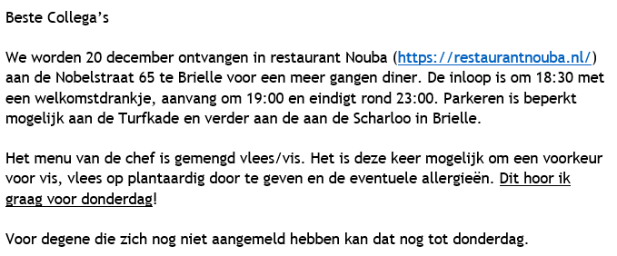

Tijdens mijn stage wil ik in staat zijn binnen en buiten het bedrijf in normale gang te communiceren met mijn collegas.
Op het MBO heb ik stage gelopen bij twee andere software bedrijven. Gedurende deze stageperiodes had ik moeite met vragen stellen en praten met collega's. Sinds ik nu ouder ben heb ik dit leerdoel opgezet om te zien of ik dit tegenwoordig wel zonder problemen kan.
Inleiding
Gedurende mijn stage zullen er meerdere evenementen zijn die ik zou kunnen gebruiken om mijn leerdoel op uit te voeren voor bewijslast. Voor bewijslast heb ik een evenement gekozen omdat het anders moeilijk is om dit leerdoel te bewijzen. Als evenement heb ik het kerstdiner gekozen omdat vrijwel iedereen van het bedrijf hier aanwezig zal zijn en ik zo genoeg initiatief zal hebben om te communiceren.
Werkwijze
Doordat een stappenplan weinig toepasbaar is op dit leerdoel zal dit minimaal zijn ingevuld.
Naast de stappen voor de oplevering van mijn bewijslast zal ik in mijn reflectie verder beschrijven hoe
Plan van aanpak
- Vragen stellen wanneer ik deze heb aan collega's
- Een praatje maken wanneer dit op komt tijdens werken
- Deelnemen aan het kerstdiner
- Bewijslast verzamelen
- Invullen leerdoel
Process - stappen tot afronding voor bewijslast
- Accepteren van de uitnodiging voor het kerstdiner
- Meerijden naar de locatie van het kerstdiner
- Consumeren van de gerechten en praatjes maken met collega's
- Foto's maken van de gerechten
- Aanvullen van mijn portfolio
Bewijzen
Bewijslast van deelname aan kerstdiner
Feedback
Stagebegeleider: "...."